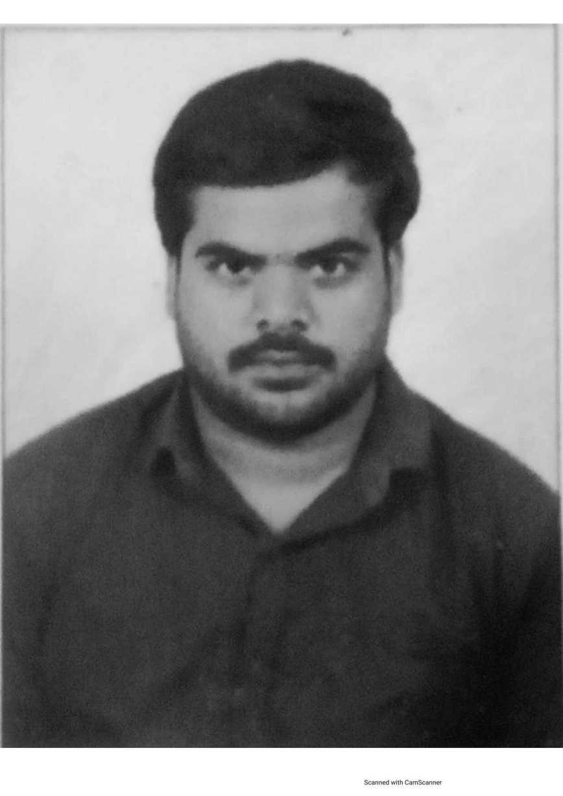

Vimlesh Choudhary

Senior Support Engineer at E2OPEN
Click here for Contact Details
Profile Summary
A result-oriented professional engineer with 5 years of experience in customer handling , providing support to National and International customers on product related issues and a go taker attitude person who is ready for any task assigned
Employment Details
- Working as a Senior Support Engineer at Blujay Solutions (now part of e2open), Hyderabad from 16 September 2021 to till date.
-
Worked as a systems engineer at Tata Consultancy Services, Hyderabad from 9 September 2019 to 15 September 2021
Key Responsibilities
- Troubleshooting technical issues for Global Customers, simulation of issues , checking logs.
- Supporting TMS-Parcel Logistics application
- Performing the Database Testing , checking the database mapping
- Escalation of issues to Development Team in case of bugs
- Developing Dashboards/Report from internal data
- Knowledge sharing
- Upgradation tasks and on call support
- Subject Matter Expert for TMS- Parcel product
- SQL
Skills
- API Testing
- SQL
- HTML(Basics)
- CSS(Basics)
- Knowledge Sharing
- SME TMS-Parcel
Certifications
-
Supply Chain and Management and Logistics from Tech Mahindra
Education
-
B.Tech Petroleum Engineering from Koneru Lakshmaiah University in 2019 with 8.22 /10
- Intermediate from Ram Lakhan Singh Yadav College with 68.4%
- SSC from Park Mount Public School with 74.1%
Other
Declaration:I here by certify that all the above information is true to the best of my knowledge.